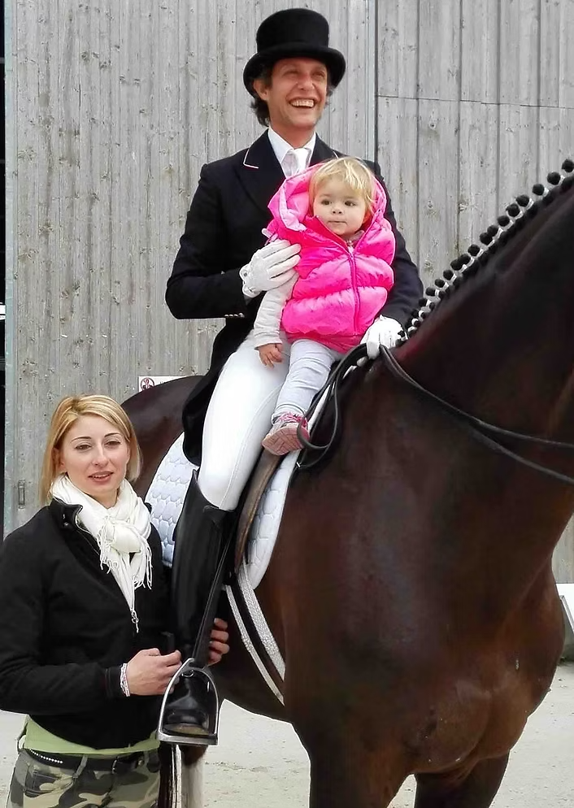

Luana Ciappini e Giuseppe Utili
Entrambi istruttori di equitazione, Luana emiliana, Giuseppe romagnolo grazie al loro carattere aperto, solare, pieno di gioia di vivere, di energia e di entusiasmo sono i perfetti interpreti di quel modo di porgersi verso gli altri e di ospitalità che hanno reso celebre nel mondo la loro terra di origine.
Luana
Luana è l'animatrice e la responsabile dell'ospitalità del Circolo Ippico e del Pony Club.
Cura il benessere degli ospiti, organizza le lezioni di equitazione degli allievi, si occupa delle necessità dei clienti. Organizza eventi, campus, soggiorni, pony-games, concorsi. Si occupa dei corsi collettivi della Scuola di Equitazione e ama particolarmente dedicarsi a bambini e adolescenti così come alla prima presa di contatto con la sella degli adulti.Giuseppe
Giuseppe è il responsabile tecnico del Circolo Ippico.
Vero uomo di cavalli, ha trascorso la maggior parte dalla sua vita a imparare la difficile e affascinante disciplina del dressage in Germania. Fine conoscitore delle tecniche di addestramento, cavaliere talentuoso, ama particolarmente condividere il suo talento e le sue profonde conoscenze del mondo dell'equitazione con chi desidera non solo montare a cavallo ma entrare in quella vera e profonda armonia con il cavallo che la disciplina del dressage consente. Nella Scuola di Equitazione del Circolo si occupa principalmente delle lezioni individuali a livello avanzato e agonistico.Guarda il nostro centro in azione
Scopri la passione e la professionalità che dedichiamo ogni giorno ai nostri cavalli e ai nostri allievi.